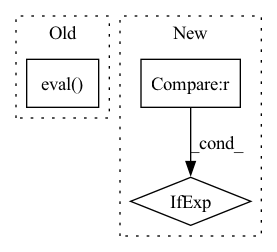

Pattern ID :4391
Before Change
// DeepSORT: https://github.com/ZQPei/deep_sort_pytorch/blob/master/deep_sort/sort/tracker.py
def __init__(self, model: nn.Module, device="cpu", nms_kernel=3, num_detections=100, detection_threshold=0.1, matching_threshold=0.2, matching_cost=None, smoothing_factor=0.9):
model.eval()
self.model = model
// hparams
self.device = deviceAfter Change
warnings.warn("A model was not provided. Only `.update()` will work")
// hparams
self.device = (model.device if isinstance(model, LightningModule) else "cpu") if device is None else device
self.nms_kernel = nms_kernel
self.num_detections = num_detections
self.detection_threshold = detection_thresholdIn pattern: SUPERPATTERN
Frequency: 5
Non-data size: 3
Instances Fragment ID: 16173158
Project Name: gau-nernst/centernet-lightning
Commit Name: 249b4ebe9c085563d2f8a19837e18d886562a1e4
Time: 2021-08-01
Author: gau.nernst@yahoo.com.sg
File Name: src/models/tracker.py
M Class Name: Tracker
N Class Name: Tracker
M Method Name: __init__(9)
N Method Name: __init__(9)
M Parent Class:
N Parent Class:
M File Name: src/models/tracker.py
N File Name: src/models/tracker.py
M Start Line: 51
M End Line: 61
N Start Line: 52
N End Line: 63
Before Change
apply_accumulate_stat(gen_copy, standing_step, prior, batch_size, z_dim, num_classes, device)
gen_copy.apply(set_deterministic_op_train)
else:
gen_copy.eval()
gen_copy.apply(set_bn_train)
gen_copy.apply(set_deterministic_op_train)
return gen_copy
else:After Change
def change_generator_mode(gen, gen_copy, standing_statistics, standing_step, prior, batch_size, z_dim, num_classes, device, training):
gen_tmp = gen if gen_copy is None else gen_copy
if training:
gen.train() Fragment ID: 16173156
Project Name: postech-cvlab/pytorch-studiogan
Commit Name: 5939d6acea4f16cf08fda6cd712a849ae1b4976a
Time: 2020-11-12
Author: first287@naver.com
File Name: src/utils/misc.py
M Class Name: AnonimousClass
N Class Name: AnonimousClass
M Method Name: change_generator_mode(10)
N Method Name: change_generator_mode(10)
M Parent Class:
N Parent Class:
M File Name: src/utils/misc.py
N File Name: src/utils/misc.py
M Start Line: 267
M End Line: 289
N Start Line: 246
N End Line: 260
Before Change
def result(self):
return self.recall.eval()
def reset(self):
self.recall.clear()After Change
def result(self):
recall = self.tp + self.fn
return float(self.tp) / recall if recall != 0 else .0
def reset(self):
self.tp = 0 Fragment ID: 16173154
Project Name: tensorlayer/tensorlayerx
Commit Name: 130cada37a04f7cdb63d9c6eae9b6f6773ef9586
Time: 2022-03-21
Author: jiaronghan@outlook.com
File Name: tensorlayerx/metrics/mindspore_metric.py
M Class Name: Recall
N Class Name: Recall
M Method Name: result(1)
N Method Name: result(1)
M Parent Class: object
N Parent Class: object
M File Name: tensorlayerx/metrics/mindspore_metric.py
N File Name: tensorlayerx/metrics/mindspore_metric.py
M Start Line: 122
M End Line: 122
N Start Line: 159
N End Line: 160
Before Change
if standing_statistics:
apply_accumulate_stat(gen, standing_step, prior, batch_size, z_dim, num_classes, device)
else:
gen.eval()
gen.apply(set_deterministic_op_train)
if gen_copy is not None:
if standing_statistics:
apply_accumulate_stat(gen_copy, standing_step, prior, batch_size, z_dim, num_classes, device)After Change
def change_generator_mode(gen, gen_copy, standing_statistics, standing_step, prior, batch_size, z_dim, num_classes, device, training):
gen_tmp = gen if gen_copy is None else gen_copy
if training:
gen_tmp.train() Fragment ID: 16173153
Project Name: postech-cvlab/pytorch-studiogan
Commit Name: 41e99a9dd9a581a3f53ec305a3e023406fab79ff
Time: 2020-11-10
Author: first287@naver.com
File Name: src/utils/misc.py
M Class Name: AnonimousClass
N Class Name: AnonimousClass
M Method Name: change_generator_mode(10)
N Method Name: change_generator_mode(10)
M Parent Class:
N Parent Class:
M File Name: src/utils/misc.py
N File Name: src/utils/misc.py
M Start Line: 246
M End Line: 269
N Start Line: 244
N End Line: 257
Before Change
def result(self):
return self.precision.eval()
def reset(self):
self.precision.clear()After Change
def result(self):
ap = self.tp + self.fp
return float(self.tp) / ap if ap != 0 else .0
def reset(self):
self.tp = 0 Fragment ID: 16173161
Project Name: tensorlayer/tensorlayerx
Commit Name: 130cada37a04f7cdb63d9c6eae9b6f6773ef9586
Time: 2022-03-21
Author: jiaronghan@outlook.com
File Name: tensorlayerx/metrics/mindspore_metric.py
M Class Name: Precision
N Class Name: Precision
M Method Name: result(1)
N Method Name: result(1)
M Parent Class: object
N Parent Class: object
M File Name: tensorlayerx/metrics/mindspore_metric.py
N File Name: tensorlayerx/metrics/mindspore_metric.py
M Start Line: 103
M End Line: 103
N Start Line: 121
N End Line: 122